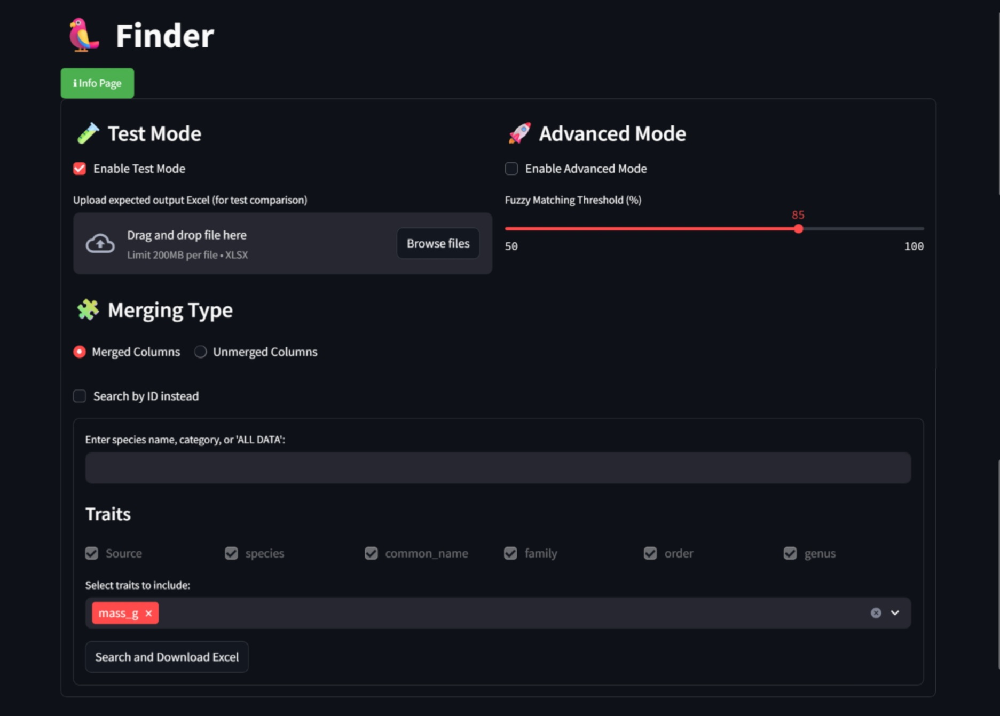
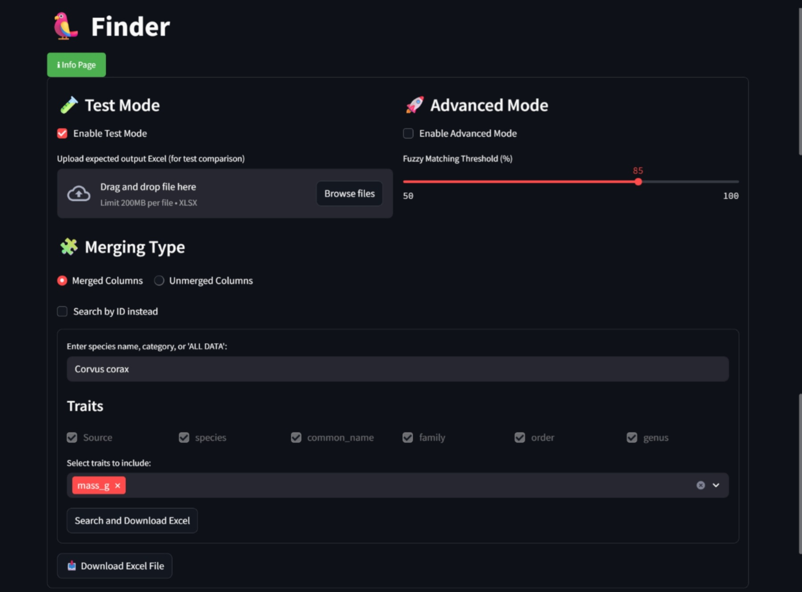
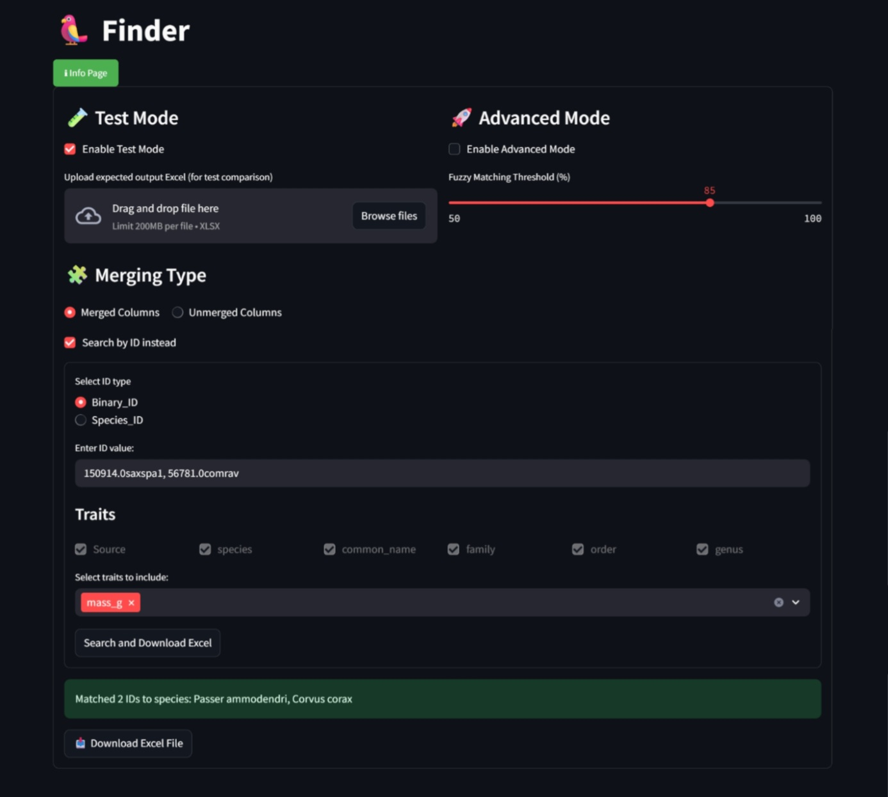
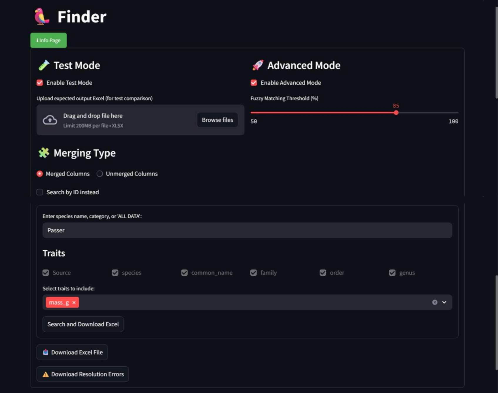
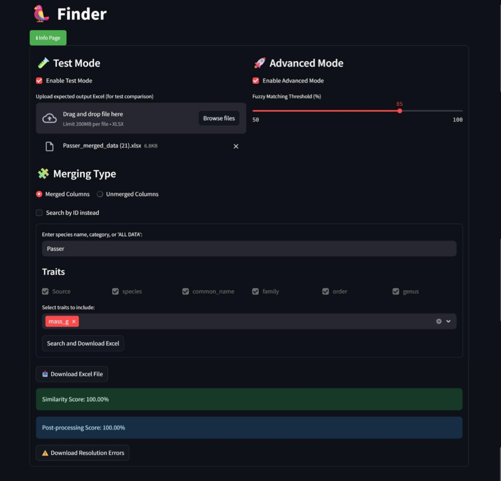

Abstract
The Finder is a specialized tool designed to streamline searching, organizing, and analyzing bird datasets across multiple integrated sources. It provides users with the ability to navigate bird data through an intuitive interface featuring dedicated buttons, search functions, and advanced configuration options. This paper presents a comprehensive study of the Finder, explaining how it works, what each button does, both in the frontend and backend and how users can effectively apply its features.
1. Introduction
Modern research, like meta-analysis of bird data, often requires combining datasets from multiple sources, a process that risks redundancy and inconsistency. The Finder is designed to unify searches across datasets, reduce redundancy in retrieved results, and provide flexible user interaction. Its user interface is button-driven, allowing users to quickly switch between operational modes, configure merged or unmerged datasets, and tailor outputs to their research needs. This paper describes the Finder’s architecture, its modes of operation, and the role of each button on its interface.
2. System Overview
The Finder is a data retrieval tool that integrates multiple bird datasets into a single searchable platform, allowing you to search, merge, and download species level data in one place. You can search by species name (full or partial), by broader category (e.g., genus or family), or via the Search by ID toggle to query by Binary_ID or Species_ID. Results are returned as an Excel file that includes required metadata (Source, species, common_name, family, order, genus) and any optional traits you selected; if you’ve selected the advanced mode, you can also download a separate file of resolution errors. In addition to exact-string lookups, Finder supports fuzzy matching (threshold adjustable) to accommodate partial or imperfect names.
Four output organizations are available:
- Merged Columns + Advanced Mode: equivalent traits across datasets are unified into single columns and different values from different datasets are pruned into one value.
- Merged Columns Only: equivalent traits across datasets are unified into single columns.
- Unmerged Columns + Advanced Mode: traits from each dataset are kept separate but different values from different datasets are pruned into one value.
- Unmerged Columns Only: traits from each dataset are kept separate.
File names clearly indicate whether the output is merged or unmerged, aiding downstream organization and sharing.

3. User Interface and Button Functions
3.1 Search Field + Search Button
- Enter a species (e.g., Corvus corax), a partial string, or a broader category (genus/family).
- Click Search to generate an Excel result with required metadata and selected traits.
- With Merged Columns, conceptually similar traits are unified; with Unmerged Columns, dataset specific columns are preserved.

3.2 Search by ID Toggle
- Enable Search by ID to switch the form from name input to ID type (Binary_ID or Species_ID) + ID value input.
- On submit, the app looks up the ID in a master reference DataFrame, retrieves the scientific name, and then fetches traits using the same backend functions used for name queries (merged: get_bird_data_sync, unmerged: get_bird_data_sync2). This keeps the internals consistent while letting users choose names or canonical IDs.
- Multiple IDs separated by commas are supported; matched outputs are concatenated into one Excel file.

3.3 Trait Selection (Required + Optional)
- Required metadata—Source, species, common_name, family, order, genus—are always included and shown as disabled checkboxes.
- Optional traits are selected via a multiselect widget. The UI preserves valid selections across mode changes and filters defaults to avoid invalid combinations. Under the hood, a metadata mapping dictionary links internal column names to displayed labels and trait groups, keeping the system scalable as datasets grow.
3.4 Merging Type (Merged vs. Unmerged)
- Merged Columns: consolidates equivalent traits from different sources into one column per trait.
- Unmerged Columns: shows each dataset’s columns separately, preserving provenance.
- Trait lists and defaults adapt to the selected mode; the filename embeds the chosen mode for clarity.
3.5 Advanced Mode and the Fuzzy Matching Threshold
Enabling the Advanced Mode merges the data from different sources for the same species in one row. If there are different values in different data sources, the median is taken if the number of different values across sources is odd; if it’s even, the closest value to the mean among the middle two values is taken. Advanced mode further consolidates results over merged data. This gives users 4 options:

- Merged + Advanced mode: Both row and column wise merging and pruning
- Merged Only: Only column wise merging and pruning
- Unmerged + Advanced mode: Only row wise merging and pruning
- Unmerged Only: No merging and pruning
Under Advanced Mode you can find the fuzzy matching threshold slider (initial default ~85%) so you can tune partial match sensitivity. Lower thresholds return more candidates (and potentially more false positives); higher thresholds are stricter. The threshold is stored in app state for consistent behavior across the session. Note: You do not need to enable advanced mode to change the fuzzy matching threshold.
3.6 Download Resolution Errors (in Advanced Mode)
If advanced mode is enabled, you will also get a downloadable Resolution Errors file which shows the RMS Error of the values that were pruned in comparison to the chosen value. This supports auditability and improves advanced mode transparency.
3.7 Test Mode (Verification & Diagnostics)
- Toggle Enable Test Mode to upload a reference Excel file; when you run a search, Finder compares your generated output to the reference and returns two metrics:
- Similarity Score (string level similarity across common columns)
- Post processing Score (deductions for duplicates, missing species, unsorted species, or missing key columns).
- The penalties are deliberately chosen (−22, −24, −26, −27) so that any combination maps uniquely to the failing checks.
- Test Mode catches issues early while preserving all normal features (e.g., threshold slider, references, resolution error download).

3.8 Download Results (Excel)
The main Download button writes your selections to Excel and embeds the mode (“merged”/“unmerged”) in the filename.
4. Workflow Examples & Practical Tips
4.1 Species Name Search
- Enter “Corvus corax” and click Search.
- Select optional traits (e.g., mass_g) and choose Merged or Unmerged.
- If you expect minor spelling or taxonomic variations, lower the fuzzy threshold slightly to broaden matches.
- Enable advanced mode if you also want row wise merging and pruning as described in Section 3.5.
4.2 Category Search (Genus/Family/ALL DATA)
- Enter a genus (e.g., Corvus) or a family (e.g., Passeriformes) and run Search to return all matching taxa.
- For very broad pulls (e.g., “ALL DATA”), consider trimming optional traits to keep file sizes manageable.
4.3 ID Search
- Toggle Search by ID, choose Binary_ID (or Species_ID), paste an ID such as 150914.0saxspa1 (example), and run Search.
- Finder resolves the species via the master reference and retrieves traits through the same backend pipeline used for name queries, ensuring identical behavior across modes.
4.4 Test Mode for Validation
- Enable Test Mode and upload your reference Excel.
- Run the same query; review the Similarity and Post processing scores. Unique penalty sums help pinpoint what failed (e.g., sorting vs. missing key columns).
Practical Tips
- Prefer scientific names for the most accurate matches.
- With fuzzy matching, lower thresholds return more candidates but can add false positives; raise the threshold to be strict.
- On very large pulls (families or “ALL DATA”), narrow optional traits to reduce file size and download time.
- For high throughput or precise lookups, use Binary_ID/Species_ID.
5. Strengths, Limitations, and Current Caveats
Strengths
- Flexible search: names, categories, and canonical IDs (Binary_ID/Species_ID) lead to the same, consistent retrieval pipeline.
- Four output organizations:
- Merged + Advanced mode: Both row and column wise merging and pruning
- Merged Only: Only column wise merging and pruning
- Unmerged + Advanced mode: Only row wise merging and pruning
- Unmerged Only: No merging and pruning
- Transparent quality control: Test Mode with a similarity metric and structured post processing checks enables rapid, reproducible verification.
- Auditability: optional resolution error Excel captures how conflicts were resolved in the Advanced Mode.
- Scalable trait UI: required traits are enforced; optional traits are curated via a multiselect backed by a metadata mapping dictionary.
Limitations & Caveats
- Fuzzy matching trade off: Lower thresholds increase recall but also false positives; tune the slider to your tolerance.
- Historical bugs: earlier issues with unmerged mode (index/shape mismatches, default trait validity, etc.) were identified and addressed; ongoing testing aims to keep both modes uniform and stable.
6. Conclusion
The Finder consolidates ecological and biological trait discovery into a single, reproducible workflow: search by name, category, or ID; customize traits; choose merged or unmerged outputs; validate results with Test Mode; and, when applicable, audit conflict handling via the resolution errors export. This combination of flexible inputs, explicit metadata requirements, and built in quality checks makes Finder a dependable bridge between heterogeneous datasets and analysis ready tables—equally useful for quick, single species lookups and for broad, taxon wide pulls destined for meta analysis.